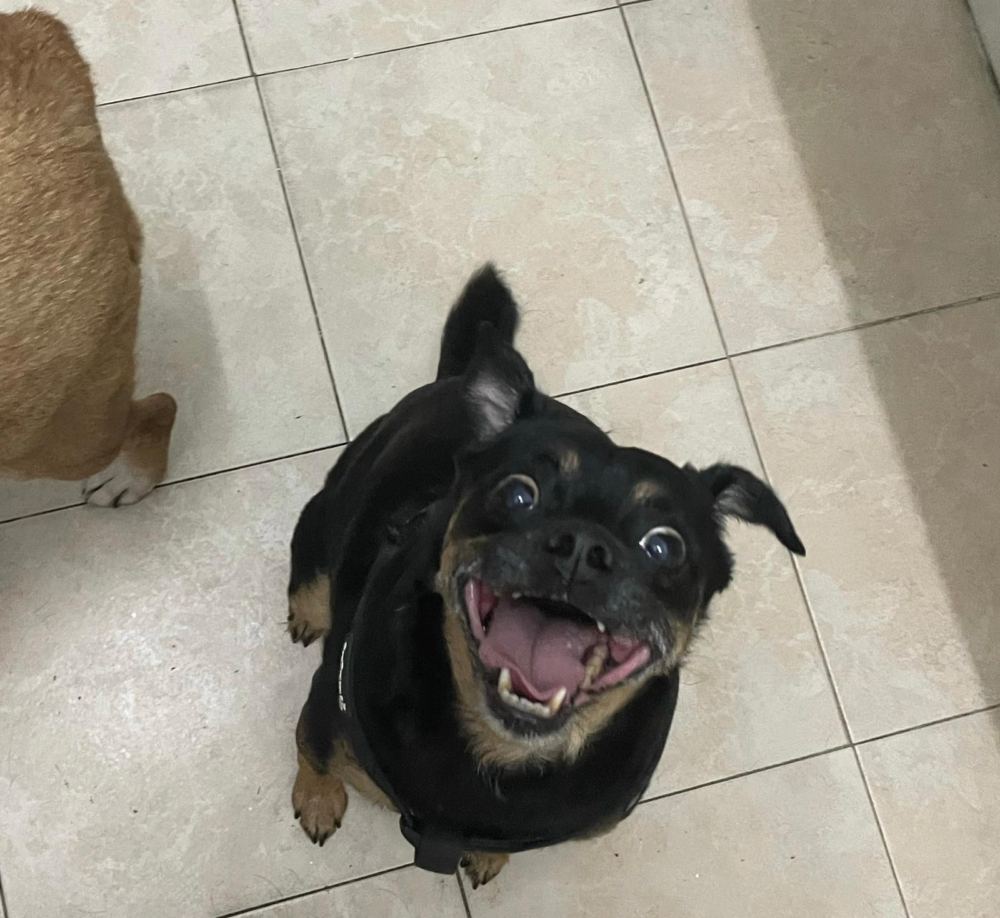

Who am I?
Two artists that I get inspired from are
Banksy on the left and Ori shimoni from "Hipstory" on the right.
Ori shimoni is the creator of the hipstory studio, he creates modern takes on influential historic figures.
Banksy is a graffiti artist, he creates murials that represent the unspoken and ill things in our society.
Animal lover


My oldest dog currently, Michael 10y.o
My chuckiest dog, Monica 9y.o
My charming cat, Moshe 4y.o
I love to take photos that capture the moment as it was and won't comeback.
Life is filled with small insignificant moments that make our life whole and most signifact to us in the end.